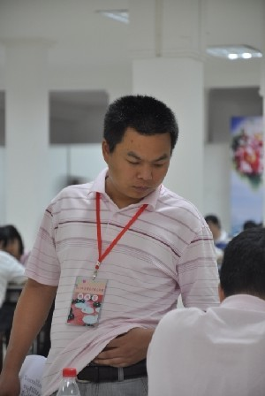
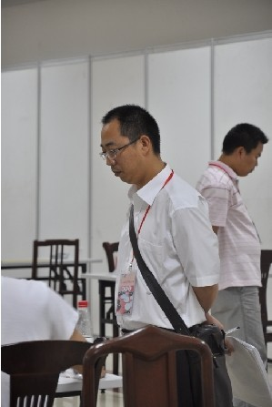
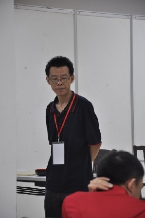
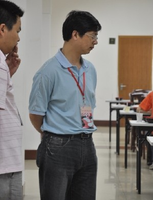
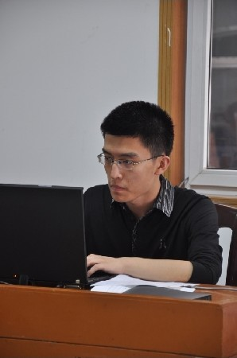
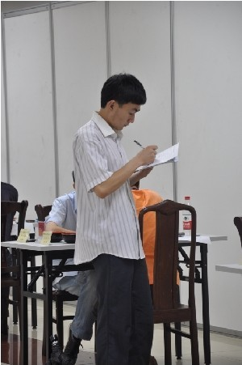
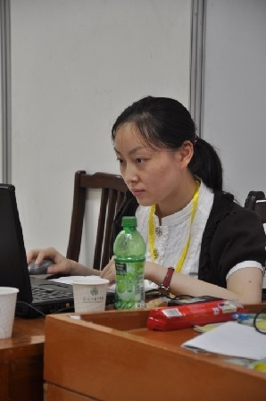

跟随伟鬼多年，在浙江五子棋中充当打杂的角色，哪有需要她去哪，帮不上大忙，做点小事，凑数可，当背景亦可。欺负欺负伟鬼，发挥发挥余热。
跟随伟鬼多年，在浙江五子棋中充当打杂的角色，哪有需要她去哪，帮不上大忙，做点小事，凑数可，当背景亦可。欺负欺负伟鬼，发挥发挥余热。一场比赛的质量，既要看吸引来的棋手的水平高低、人数多少，也要看有多少人志愿为之服务。后者通常容易被忽略，但伟鬼一直是很重视后者的人，所以我这个非棋手，才得以这么多年都在浙江的比赛中有一席之地。
本次公开赛的一大特色，就是工作人员的充沛。伟鬼很难得地能在比赛进程中优哉游哉，而比赛照样有条不紊地进行下去。工作人员往往是幕后角色，伟鬼发布了照片，却不介绍，仍然使之处于半幕后状态。所以我来写篇续，让这些默默奉献的工作人员们高调一回。
（一） 裁判组

这位想必很多人都不陌生，他是为浙江五子棋立下汗马功劳的元老――陈卫忠，人称潮水。他最早培养出来的海宁小选手如今已上高中。他是浙江第一个克服阻力，在学校内开展五子棋培训的老师，开创了浙江偏重少儿五子棋教学的道路，奠定了浙江在少儿五子棋中处于领先地位的基石。同时，他还是浙江最早和最专业的裁判，在属于浙江的比赛中多次担任编排和裁判长。他是位老师，工作很忙，但总会抽空协助浙江的比赛。而且只要有对孩子们有利的机会，更会不辞辛劳地带着一帮小孩子前往。

这位是很多人不熟悉的何正明老师。在“潮水模式”成功之后，何老师所在的宁波市洪塘小学便欲效法，以达到在宁波市小学范围内的五子棋领先地位，使五子棋成为洪塘小学的特色。在安茨第一次访问浙江时，洪塘小学便热情接待，之后又积极地参与了多次五子棋的活动，并在学校内开展五子棋教室。何老师作为直接的负责人，更是劳心劳力、尽心尽责。

宁波五子棋教师队伍的后备力量――汤鸣。照片上的他，黑黑的，瘦瘦的，谁又能联想到他是在宁波的小孩群中炙手可热的“汤圆”？汤圆在宁波青少年宫跟随伟鬼当助教已久，收获小粉丝一片，如今已能独当大任，为少儿五子棋教学添砖加瓦。

最后一位出现的裁判身份特殊，他和他的女儿同在赛场。他就是正在青少年宫学棋的郑小朋友的爹地――郑浩。女儿参加女子组比赛，老爹参与裁判组执法，父女同在五子棋中乐融融。如此和谐的场面，能不让人欣慰一笑吗？
［ 朗星 于 2010-6-18 22:57:56 时花20金币送鲜花一朵］
［ weigui 于 2010-6-18 23:17:01 时花20金币送鲜花一朵］
［ 孤竹 于 2010-6-19 0:07:21 时花20金币送鲜花一朵］
［ 有志青年 于 2010-6-19 6:39:55 时奖励此帖[金币加 20 威望加1］
［ 聊城蓝剑 于 2010-6-19 9:03:54 时花20金币送鲜花一朵］
［ 失落刀 于 2010-6-19 9:08:15 时花20金币送鲜花一朵］
［ 莲珠秀 于 2010-6-19 9:18:06 时花20金币送鲜花一朵］
［ 四川连珠魂 于 2010-6-19 10:33:17 时花20金币送鲜花一朵］
［ 无尽 于 2010-6-19 11:12:59 时花20金币送鲜花一朵］
［ lfzxdh 于 2010-6-19 18:49:54 时花20金币送鲜花一朵］
［ lfzxdh 于 2010-6-19 18:50:03 时花20金币送鲜花一朵］
［此帖子已被 有志青年 在 2010-6-19 22:07:33 编辑过］
［ 雅匪 于 2010-7-2 22:15:50 时花20金币送鲜花一朵］
［ 孤竹 于 2010-6-19 0:07:09 时花20金币送鲜花一朵］
（二） 直播组
本次比赛在棋院和爱五子棋论坛全程直播，吸引了场外棋手的关注。赛前，这是本次大赛所有组织者们的期望，当然也是我个人的愿望。

有朋自远方来――夏露。夏露同学初入棋院，是本次比赛棋院的直播员。他为人友好，在雨夜毅然把伞让给了我，自己冒雨回到住处，第二天再冒雨赶回赛场；他有合作精神，在我们两台笔记本共用一个插座甚至得拼用一根网线时，他绝不霸占，而是和我有策略地轮流使用。他有耐心，从未和五子棋亲密接触却能做完整场的直播工作；他有才华，稍提笔杆就能写出让各大五子棋网站转载的简讯。照片上的他严肃、正派，但由于年纪小，偶尔还是会闪露出孩子气。总结起来，就是踏实努力、年轻有为、风华正茂。

直播组的骨干――张登辉！也就是论坛里的lfzxdh。难以想像，如果没有他，我和夏露将直播得多么艰难。男子组总共9轮的比赛，每一轮都是张同学专注地抄谱，再传给我们网上更新，其劳累程度可想而知。张同学话不多，性格极好，当我即兴地拉他当倾听者时，他能听完我所有的无聊的抱怨而仍温和宽容。而最让我佩服的是，他甘愿做个无名英雄。当我知道他在爱五子棋有自己的ID后，我就在想他是不是会对我使用“舍露里”的号，而不是用他的ID直播表示不满。然而他一点也没有，仍然抄着谱，为我和夏露提供着原材料。所以我想，我一定要让大家了解他的付出和他的不计较！

Last but not least，为了直播组的完整性，请允许我介绍一下自己。此图中人名贺加贝，来自浙江宁波。跟随伟鬼多年，在浙江五子棋中充当打杂的角色，哪有需要她去哪，帮不上大忙，做点小事，凑数可，当背景亦可。欺负欺负伟鬼，发挥发挥余热。
［ 孤竹 于 2010-6-19 0:08:18 时花20金币送鲜花一朵］
［ 朗星 于 2010-6-19 0:37:47 时花20金币送鲜花一朵］
［ 失落刀 于 2010-6-19 9:08:31 时花20金币送鲜花一朵］
［ 逆刃 于 2010-6-19 10:29:01 时花20金币送鲜花一朵］
［ 无尽 于 2010-6-19 11:12:49 时花20金币送鲜花一朵］
［ 雨一直下 于 2010-6-19 15:13:22 时花20金币送鲜花一朵］
 感谢裁判，工作人员，最爱加贝
感谢裁判，工作人员，最爱加贝
［ 朗星 于 2010-6-19 0:38:02 时花20金币送鲜花一朵］
最爱狮子［ 一期一会 于 2010-6-19 20:57:45 时花20金币送鲜花一朵］
欺负欺负伟鬼，发挥发挥余热。
前半句是重点
偶像

陈大裁判，汤圆，贝贝
何老师、郑老师
lfzxdh夏露
辛苦啦
［此帖子已被 周光乐 在 2010-6-19 12:54:45 编辑过］
感谢这些一直支持五子棋工作的老师们
引用：永远爱朗星
原文由 朗星 发表于 2010-6-19 0:37:13 :
还有我呢?贝贝以及贝贝的楼上~ 两朵花，一人一朵~
快乐安全